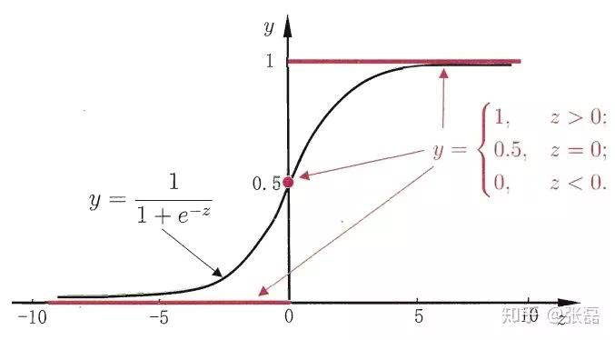

逻辑回归与线性回归
线性回归模型的简写为：$$y = \omega^Tx + b$$
如果将模型的预测值逼近$y$的衍生物，我们可以得到一个广义的线性模型$$y = g^{-1}(\omega^Tx + b)$$
其中$g(.)$称为”联系函数“(link function)。例如对数线性回归$\ln(y) = \omega^Tx+b$，其中$g(.)=\ln(.)$
考虑到二分类任务，线性回归模型产生的预测值$z=\omega^Tx+b$是实值，所以我们需要将实值$z$转化为$0/1$值。最理想的是单位阶跃函数(unit-step function)
$$
y=\begin{cases}
0,& z<0;\\
0.5,& z=0;\\
1,& z>0,
\end{cases}
$$
即如果预测值$z$大于零就判断为正例，小于零就判断为反例，预测值为临界值则可任意判别。
从图中可以看出单位阶跃函数不连续，因此不能直接用作$g^-(.)$。于是我们得到了一个近似单位阶跃函数，并且单调可微的对数几率函数 $$y = \frac{1}{1+e^{-z}}$$
将对数几率函数作为$g^-(.)$带入广义线性模型$y = g^{-1}(\omega^Tx + b)$我们可以得到$$y=\frac{1}{1+e^{-(\omega^Tx+b)}}$$
我们就可以用线性回归模型的预测结果去逼近真实标记的对数几率。对于以下的话我不是很理解：他直接对分类可能性进行建模，无需实现假设数据分布。
逻辑回归的损失函数
逻辑回归的对数似然损失函数$cost$ $function$:
$$
cost(h_θ(x),y)=\begin{cases}
−log(h_θ(x)),& y=1\\
−log(1−h_θ(x)),& y=0
\end{cases}
$$
例如当输入样本为正样本，即$y=1$时:
如果此时$h_theta(x)=1$，则单对于这个样本而言$cost=0$，表示预测完全准确。
如果此时$h_theta(x)=0$，则单对于这个样本而言$cost=\infty$，表示预测错误。由于此时是一个正样本,但是预测结果$P(y=1|x;\theta)=0$，即表示y=1的概率为0，那么此时就需要给损失函数一个很大惩罚项。
负样本时类似。
将以上两个表达式合并为一个，则单个样本的损失函数可以描述为：$$cost(h_θ(x),y)=−y_ilog(h_θ(x))−(1−y_i)log(1−h_θ(x))$$
因为 yi 只有两种取值情况，1或0，分别令y=1或y=0，即可得到原来的分段表示式。
全体样本的损失函数可以表示为：$$cost(h_θ(x),y)=\sum_{i=1}^{m}−y_ilog(h_θ(x))−(1−y_i)log(1−h_θ(x))$$
正则化与模型评估指标
还在研究。。。。
逻辑回归的优缺点
优点
-实现简单，广泛的应用于工业问题上；
-速度快，适合二分类问题
-简单易于理解，直接看到各个特征的权重
-能容易地更新模型吸收新的数据
-对逻辑回归而言，多重共线性并不是问题，它可以结合L2正则化来解决该问题;
缺点
-对数据和场景的适应能力有局限性，不如决策树算法适应性那么强。
-当特征空间很大时，逻辑回归的性能不是很好；
-容易欠拟合，一般准确度不太高
-不能很好地处理大量多类特征或变量；
-只能处理两分类问题（在此基础上衍生出来的softmax可以用于多分类），且必须线性可分，对于非线性特征，需要进行转换；
-使用前提: 自变量与因变量是线性关系。
-只是广义线性模型，不是真正的非线性方法。
样本不均衡问题的解决办法
这篇blog对与样本不均衡以及解决办法有很好的解释。